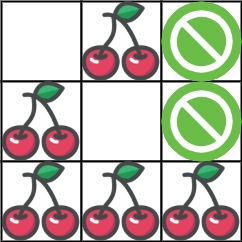

| Category | Difficulty | Likes | Dislikes |
|---|---|---|---|
| Algorithms | Hard | 4603 | 170 |
uber | microsoft | phonepe | facebook | google | amazon | flipkart | snowflake | akuna-capital
You are given an n x n grid representing a field of cherries, each cell is one of three possible integers.
0 means the cell is empty, so you can pass through,1 means the cell contains a cherry that you can pick up and pass through, or-1 means the cell contains a thorn that blocks your way.Return the maximum number of cherries you can collect by following the rules below:
(0, 0) and reaching (n - 1, n - 1) by moving right or down through valid path cells (cells with value 0 or 1).(n - 1, n - 1), returning to (0, 0) by moving left or up through valid path cells.0.(0, 0) and (n - 1, n - 1), then no cherries can be collected.
Example 1:

Input: grid = [[0,1,-1],[1,0,-1],[1,1,1]]
Output: 5
Explanation: The player started at (0, 0) and went down, down, right right to reach (2, 2).
4 cherries were picked up during this single trip, and the matrix becomes [[0,1,-1],[0,0,-1],[0,0,0]].
Then, the player went left, up, up, left to return home, picking up one more cherry.
The total number of cherries picked up is 5, and this is the maximum possible.Example 2:
Input: grid = [[1,1,-1],[1,-1,1],[-1,1,1]]
Output: 0
Constraints:
n == grid.lengthn == grid[i].length1 <= n <= 50grid[i][j] is -1, 0, or 1.grid[0][0] != -1grid[n - 1][n - 1] != -1